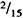

|
Fuzzy Expert Systems
by Abraham Kandel CRC Press, CRC Press LLC ISBN: 084934297x Pub Date: 11/01/91 |
| Previous | Table of Contents | Next |
We considered the size of fuzzy subset and the grade of fuzziness for a practical use. In most cases, the size of fuzzy subset has been chosen to be from 3 to 16; the grade of fuzziness, 3 to 12 [e.g., 9, 11]. For this implementation, we limit the universe of discourse of a fuzzy subset to be a finite set with 31 elements. The membership function is made discrete in 16 levels (i.e., four bits). That is, 0 represents no membership, and 15 represents a full membership and other numbers represent points in the unit interval [0,1]. We used 124 bits for digitization of the membership function.* The format of the rule representation is as follows:
*Actually, we used 128 bits of ROM for each fuzzy subset in the rule set, since the generator requires the column length of ROM to be a power of two. First location of 128 bits always contains zero and is used to inactivate the if part or the then-part of the inference processor when they are not computed. The 3 other extra bits are dummies, and we have only 124 bits (31 elements) of active data.
| Rule i: Ai → Bi | |||||||
| u1 | u2 | u3 | … | ui | … | u31 | |
|
| v1 | v2 | v3 | … | vi | … | v31 |
|
Here, each four bits represents degree of membership for each element of the universe. For example, u1 has a degree of membership  and u3 has a full degree of membership in a subset Ai. Each four bits integer is stored, most significant bit first. Each word of ROM stores one bit from all the rules stored. All the rules are, therefore, accessed in parallel. An individual rule is, however, accessed in the serial manner. Two ROM modules are used for storing the antecedent As and the conclusion Bs of the rule set.
The inference processing unit consists of multiple data paths. One data path is allocated for each rule. The data path consists of two basic units: a minimum unit and a maximum unit. The minimum unit takes two integers and produces the smaller number; the maximum unit produces the larger number. This units process integers serially. The operation of the minimum unit is shown in Figure 6 as a finite state machine of three states. The minimum units and maximum units are basic units used to implement the fuzzy intersection and fuzzy union operations.
The basic data path of the inference engine for processing a single rule is shown in Figure 7. This directly corresponds to a single data path of the inference engine described in Figure 5. The shift register is used for keeping the maximum after the fuzzy intersection operation in the first level. This is necessary since within an individual rule operations are performed serially. The register records the value of the maximum point, a value αi, when the first level has finished its operation. The last operation of the second level requires taking the maximum membership function over all the data paths (i.e., all the rules). This operation is accomplished by connecting the maximum units in the binary tree structure as shown in Figure 8.
Because of the simplicity of the architecture, the controller of the inference engine is straightforward. It consists of two counters for accessing two ROM modules serially. The controllers generates a reset signal for the minimum and maximum elements for every four cycles. The controller starts to access the conclusion parts of the rules as soon as the processing of the antecedent parts are finished. It also notifies a user of the beginning of the valid output.
The layout of the first implementation stores and processes 16 rules. Each rule consists of 124 bits of antecedent and 124 bits of conclusion. An observation and an action consist of 124 bits each and they are loaded and produced serially. A nonoverlapping two-phase clocking scheme, supplied from off-chip, is used. The operation is initiated by a reset signal that must last one clock cycle and resets the entire circuit. Input of an observation should be started two clock cycles after the reset signal, that is, on the third clock cycle. The inference engine begins to produce the result on the 133rd cycle after the reset signal. The beginning of the valid output is signaled by the controller.
The active area size is 2.99 × 3.48 mm. A 68-pin package is used. Only eight pins are used for the operation of the chip. They are VDD, VSS, φ-1, φ-2 clock signal, serially loaded observation, action, reset signal, and a signal indicating the beginning of the valid output. To output the value of the critical nodes in the processor for debugging purposes 30 pins are used. The mask layout is shown in Figure 9.
| Previous | Table of Contents | Next |